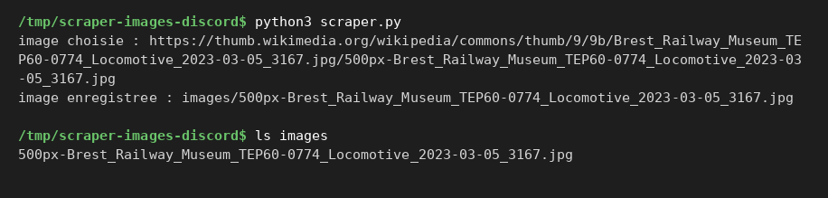

Projets / Scraper
Scraper d'images avec envoi sur Discord
Python
- Cours
- Projet personnel
- Équipe
- Seul, partie Discord écrite par un coéquipier
- Statut
- Terminé
 Python
Python- requests
- BeautifulSoup
- API REST
 Git
Git
L'objectif
Petit projet perso en Python : le script récupère une image sur une page web et l'enregistre en local, puis un bot l'envoie sur un salon Discord. La partie Discord n'est pas de moi.
La page visée est « Explore/Pictures » de Wikimedia Commons.
Les fonctionnalités
- Requêtes polies. Chaque requête attend 2 secondes et se présente avec un User-Agent qui donne le nom du projet et son adresse.
- Analyse du HTML. BeautifulSoup parcourt les balises img ; seules les miniatures JPG et PNG hébergées par Commons sont gardées, sans les SVG ni les paramètres d'URL.
- Sauvegarde. Une image est choisie au hasard et enregistrée dans le dossier images/.
- Envoi sur Discord (coéquipier). La partie Discord envoie le fichier dans un salon avec l'API REST de Discord ; le token du bot est lu dans un fichier .env, jamais dans le code.
- Enchaînement. main.py lance le scraper puis l'envoi ; scraper.py peut aussi être lancé seul.
Le pipeline
Captures
Captures réelles du projet. Cliquez sur une image pour l'agrandir ; flèches pour naviguer, Échap pour fermer.


Mon rôle
J'ai écrit le scraper (scraper.py) : récupération de la page, choix d'une image, enregistrement en local, ainsi que main.py qui enchaîne le scraper puis l'envoi.
La partie Discord (discord_envoi.py) n'a pas été écrite par moi.
La difficulté
Trouver les bonnes adresses d'images dans le HTML d'une page, qui ne sont pas toujours écrites pareil.
Ce que j'ai appris
J'ai appris à respecter les limites d'un site (délai entre les requêtes) et à brancher mon script sur le bot Discord de quelqu'un d'autre.